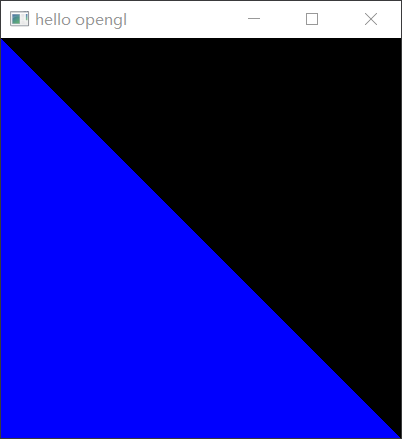

（主要以lwjgl的api为主）作者：539班 李徽发 qq:30487212 github:Euuen（以后可能改名为Volatile）
初始化opengl，下面的代码会创建一个窗口
import org.lwjgl.glfw.GLFWErrorCallback;
import org.lwjgl.opengl.GL;
import static org.lwjgl.glfw.GLFW.*;
import static org.lwjgl.opengl.GL43.*;
public class Main {
public static void main(String[] args) {
GLFWErrorCallback.createPrint(System.err).set();
glfwInit();
glfwWindowHint(GLFW_CONTEXT_VERSION_MAJOR, 4);
glfwWindowHint(GLFW_CONTEXT_VERSION_MINOR, 3);
long handle = glfwCreateWindow(400, 400, "hello opengl", 0, 0);
glfwMakeContextCurrent(handle);
glfwSwapInterval(1);
glfwShowWindow(handle);
GL.createCapabilities();
glClearColor(0.0f,0.0f,0.0f,0.0f);
while (!glfwWindowShouldClose(handle)){
glClear(GL_COLOR_BUFFER_BIT | GL_DEPTH_BUFFER_BIT);
glfwSwapBuffers(handle);
glfwPollEvents();
}
glfwTerminate();
}
public static void dbg(Object object){
System.out.println(object);
}
}
主要的初始化函数为这三个glfwInit()，glfwMakeContextCurrent(handle)，GL.createCapabilities()我们肯定不满足于只有一个窗口的对吧，要不然这个opengl有什么意思。而现代opengl引入了管线概念，可以更快的渲染图形，所以我们有必要学一下管线
其实管线相较于传统的立即模式，我个人感觉就是加了一些着色器而已，所以要想写现代opengl代码，我们得看看着色器怎么写
着色器（Shader）的编写和使用
最简单的一个使用范例就是只用顶点着色器(Vertex Shader)和片段着色器(Fragmenr Shader), 下面的代码会创建和编译两个着色器
// 创建着色器对象
int vShader = glCreateShader(GL_VERTEX_SHADER);
int fShader = glCreateShader(GL_FRAGMENT_SHADER);
// 读取着色器代码到内存中
String vSource = Files.readString(Path.of("vShader.glsl"));
String fSource = Files.readString(Path.of("fShader.glsl"));
// 把着色器代码载入显卡
glShaderSource(vShader, vSource);
glShaderSource(fShader, fSource);
// 编译着色器
glCompileShader(vShader); dbgShaderInfo("vShader", vShader);
glCompileShader(fShader); dbgShaderInfo("fShader", fShader);
// vShader.glsl 顶点着色器的源码
#version 430
layout(location = 0) in vec3 position_1;
void main(){
gl_Position = vec4(position_1, 1.0f);
}
// fShader.glsl 片段着色器的源码
#version 430
out vec4 color;
void main(){
color = vec4(0, 0, 1, 1);
}
这个glsl代表的意思为gl shader language, 关于这个语言我们以后会慢慢深入，现在只要知道他长什么样子就行了
以下是dbg函数的实现
public static void dbgShaderInfo(String name, int shader){
System.out.println(name + ":" + glGetShaderInfoLog(shader));
}
public static void dbgProgramInfo(String name, int program){
System.out.println(name + ":" + glGetProgramInfoLog(program));
}
有了shader之后，你还要有program才能组成一个渲染管线
int program = glCreateProgram();
glAttachShader(program, vShader);
glAttachShader(program, fShader);
glLinkProgram(program); dbgProgramInfo("program", program);
那么在我们获得了program之后我们怎么用这个管线绘制一个小三角形呢？这里还需要介绍两个概念， 一个是vao， 还有一个是vbo，这里不从字母意思解释他俩是干嘛的了，因为我之前试过，然后就理解错了。我这里直接告诉你吧。
VAO and VBO
我们先说说vbo，所谓vbo就是opengl中存储顶点数据，或者法线数据，或者其他的纹理贴图坐标,为了实现简单一点我们现在只讲讲顶点数据
这里又不得不说一下opengl相机的顶点设定了，在opengl窗口中,gl_Position的个个分量的绝对值如果大于1就会超出窗口（对于z，如果小于0或者大于1就不显示了），这是因为opengl用的是标准化设备窗口（我也不记得专业名词了，自己搜搜吧）
扯远了，反正你只要知道vbo是用来存数据的一个对象，vbo对于显卡中的某块内存id，这样opengl就知道你的数据了
你可能想问，既然有了vbo为何还要vao呢？？他好像跟渲染管线没关系啊
问得好，如果是只有一个渲染对象的opengl程序，那确实没啥用，但是如果你的一个场景中有上千万个对象呢？这里预告一下，vbo的设置很麻烦。所以为了省去多余的vbo的设置，就出现了vao
我们先来一个小小的三角形吧
float[] vertexes = new float[]{
-1, 1, 0, // 上顶点
-1, -1, 0, // 左下顶点
1, -1, 0, // 又下顶点
};
int vao = glGenVertexArrays(); // 向显卡请求一块vao
glBindVertexArray(vao); // 绑定vao
int vbo = glGenBuffers(); // 向显卡请求一块vbo
glBindBuffer(GL_ARRAY_BUFFER, vbo); // 绑定vbo
glBufferData(GL_ARRAY_BUFFER, vertexes, GL_STATIC_DRAW); // 加载顶点数据
glVertexAttribPointer(0, 3, GL_FLOAT, false, 0, 0); // 设置顶点属性
glEnableVertexAttribArray(0); // 把buffer加载到location=0处
这里的最后一行glEnableVertexAtrribArray刚好对应了layout(location=1)
然后你如果想看到输出画面的话还需要再使用语句glUseProgram([你program的变量名]),并且在主循环内加入glDrawArrays(GL_TRIANGLES, 0, 3);注意，不要把他放在glClera前啊，要不然opengl刚画完，你又叫人家清了，你不是神金吗？最后，如果你能看到这个画面说明你成功了，你真是个大聪明（没贬义的意思，全是夸张o(*￣︶￣*)o），贡献你，踏入了opengl的第一扇大门
 下一页